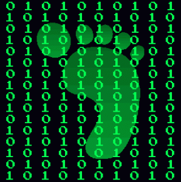
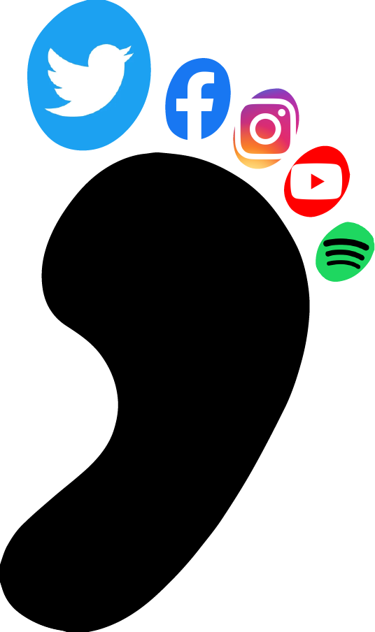

to find inspiration for this project, i closed my eyes and scrolled on wikipedia's list of divination techniques. (thanks professor for the resource)
the "omancy" that i landed on was ichnomancy, which is divination based on footprints. immediately, i thought of the idea of a digital footprint, something that i was already (sorta) thinking about for this project.
i couldn't find many details about how traditional ichnomancy works, so my interpretation of one's digital footprint isn't really based on anything. the closest thing would be palmistry, but it doesn't really fit. to interpret one's digital footprint, i've defined five "toes" and correlated common websites to each toe. when interpreting someone's digital footprint, it's a lot like astrology, since each toe says something about the person, and the whole footprint is supposed to be a summary of the person.
here's a table to see what each toe/website means
| toe | website | meaning |
|---|---|---|
| 1st (big toe) | core - who you really are | |
| 2nd | appearance | instagram - how people percieve you |
| 3rd | shame - what you're trying to hide | |
| 4th | youtube | attitude - how you approach life |
| 5th (pinky) | spotify | balance - what keeps you upright |
to actually get your digital footprint read, i would like to train an ai/llm to scrape your accounts on these sites and intepret your interactions/posts/whatever. i am not that technically inclined, so i asked bing's ai a few questions about myself. i honestly don't know if bing's ai can really interpret these websites, so the results are a little... interesting
first, i asked it to "read through @sheepnstufff's tweets and tell me what it says about them". it responded that i post about sheep, knitting, and coding (i tweet about none of these). it also dug up my old pixilart account that i haven't thought about in years. at the end of the response, though, it said that i "seem to be interested in creative and technical activities" which yeah is true. its very clear that this response was written by an llm/ai
when i asked it to look at my instagram, it told me that either the account doesn't exist (it does) or that it's private (it's not). it instead asked if i wanted information about a german construction company. i said sure why not and it told me a little bit about the construction company and then some random nazi... 2nd toe reading was a bust
third time's the charm. except it wasn't. it was very uncooperative when i asked it to tell me about my own shameful secrets. very interestingly, it brought up moral reasons to not look at my (public) facebook profile. this just keeps getting worse and worse. also i dont love being morally high-roaded by an ai chatbot
when asking about my youtube watch history, i got a similar response about it being a breach of privacy. instead i picked a few youtube channels off the top of my head that i like and asked what that says about me (and my additude). it gave me a response that was quite wordy. the keywords and phrases it gave me (and bolded, interestingly) were "sense of humor, taste for adventure, love for gaming, curious, informed, creative, witty, imaginative, eccentric, sarcastic, observant, and irreverent." it gave me three words/phrases per channel that i asked about (i asked about four), but the resulting terms were all over the place. it really reminds me of astrology since most of these words apply to just about everyone. the 4th toe reading was one of the most successful ones.
finally, the spotify reading. when i first asked, i got the same response about privacy violations, so i instead cloned my liked songs into a public playlist and asked about it. it told me the same privacy stuff again, but told me that the playlist was called "songs to sing in the shower" (its not)and it listed a few songs from the playlist (none of the songs were actually in the playlist). i had to resort to my method for the youtube reading, by listing a few artists i listen to. instead of giving me obvious keywords, it gave me a conclusive summary (in screenshot below).
the reading was fun, despite the... roadblocks. it very much felt like astrology, since it was telling me about myself. i would encourage others to try asking similar questions to get a reading of their own. or ask different questions to a different chatbot and see how it goes! i would love to create my own site/bot to deliver readings, so stay tuned maybe? i would also like to expand it to include other aspects of online presence, or even customized based on the person (not everyone has twitter or instagram or facebook). overall, i would say my technomancy reading was a success. :)